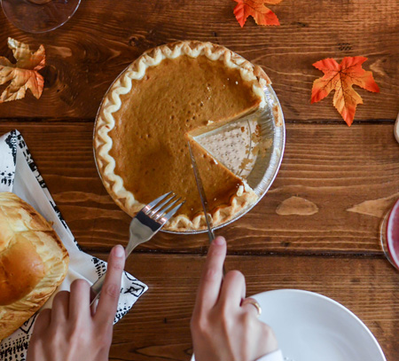
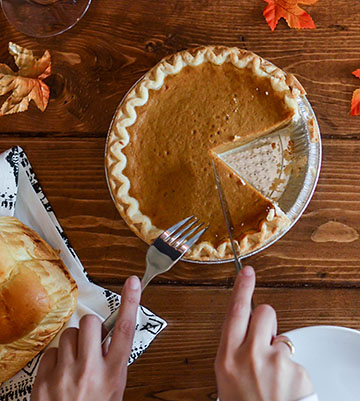

 
Photo by Element5 Digital
Ingredients
- 1 2/3 tablespoon ginger
- 1 2/3 tablespoon cinnamon
- 1 1/4 cup boiling water
- 4 1/2 cups brown sugar
- 10 eggs
- 2 1/2 teaspoons salt
- 6 1/4 cups canned pumpkin
- 1 1/4 quart evaporated milk
- 3/4 cup orange juice
Instructions
- Make a smooth paste of the spices and water.
- Add this with sugar, beaten eggs and salt to the pumpkin.
- Stir to blend thoroughly, then add milk, which has been scalded, and the orange juice.
- Pour into unbaked pic shells.
- Bake in hot oven (450° F) 15 minutes, then reduce to slow oven (325° F) and bake 25 minutes longer.
Yeild: 5 pies